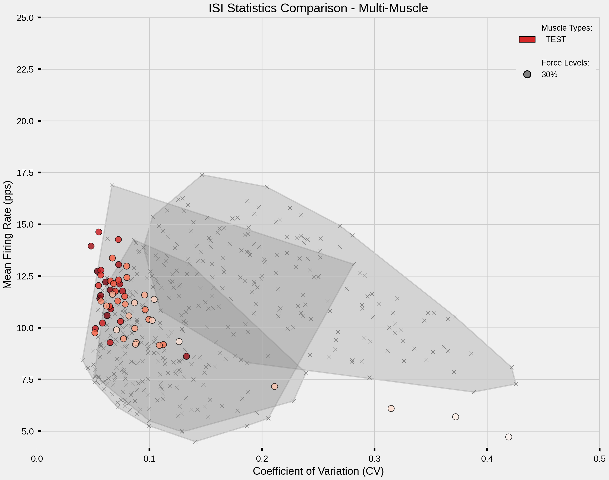

Note
Go to the end to download the full example code.
Multi-Muscle ISI and CV Statistics Comparison#
This example demonstrates comparative analysis of ISI/CV statistics across multiple muscle types and force levels. It automatically detects available data files and creates publication-quality visualizations comparing simulated motor unit firing patterns against experimental data.
Note
Analysis workflow:
Auto-detect available force levels for each muscle type
Load ISI/CV statistics from previous simulations (example 03)
Load experimental reference data for comparison
Create multi-muscle comparison plot with color-coded muscles and force levels
Generate summary statistics for all conditions
Important
Prerequisites: This example requires ISI/CV data files:
Run
03_extract_isi_and_cv_per_ramps.pyfor each muscle/force combinationGenerates CSV files:
{prefix}isi_cv_data_{muscle}_{force}.csvOptional:
ISI_statistics.csvfor experimental data overlay
Visualization Strategy: Creates a comprehensive comparison showing:
Muscle types: Distinguished by color gradients (red, blue, green, etc.)
Force levels: Distinguished by marker shapes (circle, square, triangle, etc.)
Recruitment order: Early-recruited units show full color, late-recruited fade to white
Experimental data: Gray convex hulls and scatter points for reference
Use Cases: Compare motor unit firing patterns across different muscle types, force levels, and experimental conditions for validation and analysis.
Import Libraries#
import os
os.environ["MPLBACKEND"] = "Agg"
if "DISPLAY" in os.environ:
del os.environ["DISPLAY"]
import warnings
from pathlib import Path
import matplotlib.pyplot as plt
import numpy as np
import pandas as pd
from matplotlib.lines import Line2D
from matplotlib.patches import Patch, Polygon
from scipy.spatial import ConvexHull
# Optional: scienceplots for publication-quality styling
try:
import scienceplots # noqa
import seaborn as sns
HAS_SCIENCEPLOTS = True
except ImportError:
HAS_SCIENCEPLOTS = False
warnings.warn("scienceplots not available - using default matplotlib style")
warnings.filterwarnings("ignore")
Configure Matplotlib Style#
Setup publication-quality styling for scientific plots.
if HAS_SCIENCEPLOTS:
# Use scienceplots for publication-quality styling
plt.style.use(["science", "nature"])
sns.set_context("paper", font_scale=2)
else:
# Fallback to manual styling without scienceplots
plt.style.use("fivethirtyeight")
# Configure rendering and output quality
plt.rcParams["text.usetex"] = False # Disable LaTeX for compatibility
plt.rcParams["figure.dpi"] = 300
plt.rcParams["savefig.dpi"] = 300
plt.rcParams["figure.figsize"] = (10, 8)
# Keep text editable in vector exports
plt.rcParams["svg.fonttype"] = "none"
plt.rcParams["pdf.fonttype"] = 42
# Font configuration
plt.rcParams["font.family"] = "sans-serif"
plt.rcParams["font.sans-serif"] = ["Liberation Sans", "Roboto", "DejaVu Sans"]
# Clean axes styling
plt.rcParams["axes.spines.top"] = False
plt.rcParams["axes.spines.right"] = False
plt.rcParams["xtick.top"] = False
plt.rcParams["ytick.right"] = False
# Axis thickness
plt.rcParams["axes.linewidth"] = 2.0
plt.rcParams["xtick.major.width"] = 2.0
plt.rcParams["ytick.major.width"] = 2.0
# Hide minor ticks
plt.rcParams["xtick.minor.visible"] = False
plt.rcParams["ytick.minor.visible"] = False
# Layout spacing
plt.rcParams["figure.subplot.left"] = 0.15
plt.rcParams["figure.subplot.bottom"] = 0.12
Configuration#
Set analysis parameters and visualization options.
# Data paths
# Handle both manual execution and Sphinx Gallery (where __file__ is not defined)
try:
_script_dir = Path(__file__).parent
except NameError:
_script_dir = Path.cwd()
# Try dynamic results first, then fall back to static example data
RESULTS_PATH = _script_dir.parent.parent / "results"
STATIC_DATA_PATH = _script_dir.parent / "data" / "isi_cv"
# Muscle types to analyze
MUSCLES = ["TEST"] # Can extend to multiple: ["THIRTY", "TWENTYFIVE", "TWENTY"]
# Output format
OUTPUT_FORMAT = "png" # Options: "png", "jpg", "svg", "pdf"
# Muscle-specific colormaps (base color to white gradients)
MUSCLE_COLORMAPS = {
"TEST": "Reds",
"THIRTY": "Reds",
"TWENTYFIVE": "Blues",
"TWENTY": "Greens",
"FIFTEEN": "Purples",
"TEN": "Oranges",
"FIVE": "YlOrBr",
}
# Base colors for legend (extracted from colormaps)
MUSCLE_LEGEND_COLORS = {
"TEST": "#d62728", # Red
"THIRTY": "#d62728", # Red
"TWENTYFIVE": "#1f77b4", # Blue
"TWENTY": "#2ca02c", # Green
"FIFTEEN": "#9467bd", # Purple
"TEN": "#ff7f0e", # Orange
"FIVE": "#8c564b", # Brown
}
# Experimental data colors (all gray)
EXP_COLORS = {"VM": "#808080", "VL": "#808080", "TA": "#808080", "FDI": "#808080"}
# Available marker styles (cycle through these for force levels)
AVAILABLE_MARKERS = ["o", "s", "^", "D", "v", "p", "*", "h", "<", ">", "d", "P", "X"]
Data Loading Functions#
def auto_detect_force_levels(results_path, muscle_type, study_prefix, short_muscle):
"""
Auto-detect available force levels for a given muscle type.
Parameters
----------
results_path : Path
Path to results directory containing CSV files.
muscle_type : str
Full muscle type identifier (e.g., "THIRTY_gamma2.0-3.0").
study_prefix : str
Study prefix for file naming (e.g., "THIRTY_gamma2.0-3.0_").
short_muscle : str
Short muscle name used in filename (e.g., "THIRTY").
Returns
-------
list of int
Sorted list of detected force levels.
"""
pattern = f"{study_prefix}isi_cv_data_{short_muscle}_*.csv"
files = list(results_path.glob(pattern))
force_levels = []
for file in files:
# Extract force level from filename
# Pattern: {prefix}isi_cv_data_{short_muscle}_{force}.csv
parts = file.stem.split("_")
try:
force_level = int(parts[-1])
force_levels.append(force_level)
except (ValueError, IndexError):
continue
return sorted(force_levels)
def load_multi_muscle_data(results_path, muscle_types):
"""
Load ISI/CV data for multiple muscle types with auto-detected force levels.
Parameters
----------
results_path : Path
Path to results directory containing CSV files.
muscle_types : list of str
List of muscle type identifiers (e.g., ["THIRTY_gamma2.0-3.0", "TWENTYFIVE_gamma2.0-3.0"]).
Returns
-------
dict
Nested dictionary: {muscle: {force_level: DataFrame}}
DataFrame columns:
- MU_ID: Motor unit identifier
- mean_firing_rate_Hz: Mean firing rate in Hz
- CV_ISI: Coefficient of variation of inter-spike intervals
"""
all_data = {}
for muscle in muscle_types:
study_prefix = f"{muscle}_"
# Extract short muscle name (first part before underscore)
short_muscle = muscle.split("_")[0]
# Auto-detect force levels
force_levels = auto_detect_force_levels(results_path, muscle, study_prefix, short_muscle)
if not force_levels:
print(f"No data found for {muscle}")
continue
print(f"Detected force levels for {muscle}: {force_levels}")
muscle_data = {}
for force in force_levels:
file_path = results_path / f"{study_prefix}isi_cv_data_{short_muscle}_{force}.csv"
if file_path.exists():
try:
df = pd.read_csv(file_path)
if len(df) == 0:
print(f"Empty data for {force}% in {file_path.name} - skipping")
continue
muscle_data[force] = df
print(f"Loaded {len(df)} motor units for {force}% from {file_path.name}")
except pd.errors.EmptyDataError:
print(f"Malformed/empty file for {force}%: {file_path.name} - skipping")
except Exception as e:
print(f"Error reading {file_path.name}: {e}")
else:
print(f"File not found: {file_path}")
if muscle_data:
all_data[muscle] = muscle_data
return all_data
def load_experimental_data(csv_path):
"""
Load experimental ISI statistics from CSV file.
Parameters
----------
csv_path : Path
Path to ISI_statistics.csv file.
Returns
-------
pd.DataFrame
Experimental data with columns including:
- Muscle: Muscle identifier
- Force Level: Force level (%)
- FR mean: Mean firing rate (pps)
- ISI CV: Coefficient of variation
"""
if csv_path.exists():
df = pd.read_csv(csv_path)
print(f"Loaded experimental data: {len(df)} records")
return df
else:
print(f"Experimental data file not found: {csv_path}")
return None
Color Mapping Functions#
def get_muscle_colors(recruitment_order, colormap_name="Reds"):
"""
Generate colors from base color to white based on recruitment order.
Early recruited units (low index) receive the full base color,
while late recruited units (high index) fade to white.
Parameters
----------
recruitment_order : np.ndarray
Array of recruitment indices (typically MU_ID).
colormap_name : str
Matplotlib colormap name (e.g., 'Reds', 'Blues', 'Greens').
Returns
-------
np.ndarray
Array of RGBA colors with shape (N, 4).
"""
# Get colormap
cmap = plt.get_cmap(colormap_name)
# Normalize recruitment order to [0, 1]
norm_recruitment = (recruitment_order - recruitment_order.min()) / (
recruitment_order.max() - recruitment_order.min() + 1e-10
)
# Reverse the mapping: early recruited (0) → full color (1.0)
# late recruited (1) → white (0.0)
color_values = 1.0 - norm_recruitment
# Sample from colormap
colors = cmap(color_values)
return colors
def generate_force_markers(force_levels):
"""
Generate marker mappings for force levels.
Parameters
----------
force_levels : set or list
Set of force levels (e.g., {5, 15, 30, 50}).
Returns
-------
dict
Dictionary mapping force_level to marker shape.
"""
force_markers = {}
for i, force in enumerate(sorted(force_levels)):
# Assign marker (cycle through available markers)
force_markers[force] = AVAILABLE_MARKERS[i % len(AVAILABLE_MARKERS)]
return force_markers
Plotting Function#
def plot_cv_vs_fr_multi_muscle(all_muscle_data, exp_data):
"""
Create CV vs FR plot comparing multiple muscles across force levels.
Parameters
----------
all_muscle_data : dict
Nested dictionary: {muscle: {force_level: DataFrame}}.
exp_data : pd.DataFrame
Experimental ISI statistics.
Returns
-------
tuple
(fig, ax) matplotlib figure and axis objects.
"""
fig, ax = plt.subplots(figsize=(10, 8))
# Collect all force levels across all muscles
all_force_levels = set()
for muscle_data in all_muscle_data.values():
all_force_levels.update(muscle_data.keys())
force_markers = generate_force_markers(all_force_levels)
# 1. Plot experimental data (convex hulls + scatter) - INCLUDING FDI
if exp_data is not None:
muscles = exp_data["Muscle"].unique()
for muscle in muscles:
# No longer skip FDI - include all experimental muscles
muscle_data = exp_data[exp_data["Muscle"] == muscle]
cv_data = muscle_data["ISI CV"].values
fr_data = muscle_data["FR mean"].values
# Draw convex hull for experimental data
if len(cv_data) > 2:
points = np.column_stack([cv_data, fr_data])
try:
hull = ConvexHull(points)
hull_points = points[hull.vertices]
polygon = Polygon(
hull_points,
facecolor=EXP_COLORS.get(muscle, "#808080"),
alpha=0.25,
edgecolor=EXP_COLORS.get(muscle, "#808080"),
linewidth=1.5,
linestyle="-",
zorder=0,
)
ax.add_patch(polygon)
except Exception:
# Skip if convex hull cannot be computed
pass
# Scatter points for experimental data
ax.scatter(
cv_data,
fr_data,
s=20,
alpha=1.0,
color=EXP_COLORS.get(muscle, "#808080"),
edgecolors="white",
linewidth=0.5,
marker="x",
zorder=1,
)
# 2. Plot simulated data for each muscle and force level
for muscle_type in sorted(all_muscle_data.keys()):
muscle_data = all_muscle_data[muscle_type]
# Extract short muscle name (first part before underscore)
# e.g., "THIRTY_gamma0.5-0.75" → "THIRTY"
short_muscle = muscle_type.split("_")[0]
colormap_name = MUSCLE_COLORMAPS.get(short_muscle, "Greys")
for force_level in sorted(muscle_data.keys()):
df = muscle_data[force_level]
# Extract recruitment order from MU_ID
if "MU_ID" in df.columns:
recruitment_order = df["MU_ID"].values
else:
recruitment_order = np.arange(len(df))
# Get color-to-white gradient for this muscle
colors = get_muscle_colors(recruitment_order, colormap_name)
# Get marker for this force level
marker = force_markers.get(force_level, "o")
# Plot with muscle-specific colors and force-level-specific marker
ax.scatter(
df["CV_ISI"],
df["mean_firing_rate_Hz"],
s=50,
alpha=0.8,
c=colors,
edgecolors="black",
linewidth=0.6,
marker=marker,
zorder=2,
)
# 3. Create combined legend
legend_elements = []
# Section 1: Muscle types (colored patches)
legend_elements.append(Line2D([0], [0], color="none", label="Muscle Types:", marker=""))
for muscle in sorted(all_muscle_data.keys()):
# Extract short muscle name for cleaner legend
short_muscle = muscle.split("_")[0]
color = MUSCLE_LEGEND_COLORS.get(short_muscle, "#000000")
legend_elements.append(Patch(facecolor=color, edgecolor="black", label=f" {short_muscle}"))
# Add spacing
legend_elements.append(Line2D([0], [0], color="none", label=" ", marker=""))
# Section 2: Force levels (marker shapes)
legend_elements.append(Line2D([0], [0], color="none", label="Force Levels:", marker=""))
for force in sorted(all_force_levels):
marker = force_markers[force]
legend_elements.append(
Line2D(
[0],
[0],
marker=marker,
color="none",
markerfacecolor="gray",
markeredgecolor="black",
markersize=8,
label=f"{force}%",
linewidth=0,
)
)
# Add legend to plot
ax.legend(
handles=legend_elements,
frameon=True,
fontsize=9,
framealpha=1.0,
edgecolor="none",
loc="upper right",
ncol=1,
)
# 4. Format plot
ax.set_xlabel("Coefficient of Variation (CV)", fontsize=12)
ax.set_ylabel("Mean Firing Rate (pps)", fontsize=12)
ax.set_xlim(0, 0.5)
ax.set_ylim(4, 25)
ax.set_title("ISI Statistics Comparison - Multi-Muscle", fontsize=14)
ax.tick_params(axis="both", labelsize=10)
# sns.despine(ax=ax, offset=10, trim=True)
return fig, ax
Load Simulation Data#
Load ISI/CV statistics from previous simulations with auto-detection of available force levels.
print("=" * 80)
print("Multi-Muscle ISI/CV Comparison Plot")
print("=" * 80)
print(f"\tMuscles: {', '.join(MUSCLES)}")
print(f"\tOutput Format: {OUTPUT_FORMAT.upper()}")
print("\nLoading simulation data (auto-detecting force levels)...")
all_muscle_data = load_multi_muscle_data(RESULTS_PATH, MUSCLES)
if not all_muscle_data and STATIC_DATA_PATH.exists():
print(f" No data in {RESULTS_PATH.relative_to(_script_dir.parent.parent)}, trying static example data...")
all_muscle_data = load_multi_muscle_data(STATIC_DATA_PATH, MUSCLES)
if all_muscle_data:
print(f" ✓ Loaded static example data from: {STATIC_DATA_PATH.relative_to(_script_dir.parent.parent)}")
if not all_muscle_data:
print(f"\nNo simulation data found in:")
print(f" - {RESULTS_PATH}")
print(f" - {STATIC_DATA_PATH}")
print("\nPlease run 03_extract_isi_and_cv_per_ramps.py first.")
raise FileNotFoundError("No ISI/CV data files found in results or static data directories")
================================================================================
Multi-Muscle ISI/CV Comparison Plot
================================================================================
Muscles: TEST
Output Format: PNG
Loading simulation data (auto-detecting force levels)...
Detected force levels for TEST: [30]
Loaded 71 motor units for 30% from TEST_isi_cv_data_TEST_30.csv
Load Experimental Data#
Load optional experimental reference data for comparison.
print("\nLoading experimental data...")
# Handle __file__ not being defined (e.g., in sphinx-gallery or interactive sessions)
try:
script_dir = Path(__file__).parent
except NameError:
# Fallback to current working directory
script_dir = Path.cwd()
exp_csv_path = script_dir / "ISI_statistics.csv"
exp_data = load_experimental_data(exp_csv_path)
Loading experimental data...
Loaded experimental data: 420 records
Create Comparison Plot#
Generate multi-muscle comparison visualization.
print("\nCreating multi-muscle comparison plot...")
fig, ax = plot_cv_vs_fr_multi_muscle(all_muscle_data, exp_data)
# Save figure
muscle_str = "_".join(MUSCLES)
output_file = RESULTS_PATH / f"isi_cv_comparison_{muscle_str}.{OUTPUT_FORMAT}"
plt.tight_layout()
# Set quality based on format
if OUTPUT_FORMAT in ["jpg", "jpeg"]:
plt.savefig(output_file, dpi=300, bbox_inches="tight", pil_kwargs={"quality": 95})
else:
plt.savefig(output_file, dpi=300, bbox_inches="tight", transparent=True)
plt.show()
print(f"\nPlot saved to: {output_file}")

Creating multi-muscle comparison plot...
Plot saved to: /home/runner/work/MyoGen/MyoGen/results/isi_cv_comparison_TEST.png
Summary Statistics#
Print detailed statistics for all analyzed conditions.
print("\n" + "=" * 80)
print("SUMMARY STATISTICS")
print("=" * 80)
total_motor_units = 0
for muscle in sorted(all_muscle_data.keys()):
print(f"\n{muscle}:")
muscle_data = all_muscle_data[muscle]
for force_level in sorted(muscle_data.keys()):
df = muscle_data[force_level]
total_motor_units += len(df)
print(f"\n {force_level}% Force:")
print(f" Motor units (N): {len(df)}")
print(
f" Mean firing rate: {df['mean_firing_rate_Hz'].mean():.2f} ± "
f"{df['mean_firing_rate_Hz'].std():.2f} Hz"
)
print(f" Mean CV: {df['CV_ISI'].mean():.3f} ± {df['CV_ISI'].std():.3f}")
print(
f" FR range: {df['mean_firing_rate_Hz'].min():.2f} - "
f"{df['mean_firing_rate_Hz'].max():.2f} Hz"
)
print(f" CV range: {df['CV_ISI'].min():.3f} - {df['CV_ISI'].max():.3f}")
print(f"\n{'=' * 80}")
print(f"Total motor units plotted: {total_motor_units}")
print(f"Total muscle types: {len(all_muscle_data)}")
print("=" * 80)
================================================================================
SUMMARY STATISTICS
================================================================================
TEST:
30% Force:
Motor units (N): 71
Mean firing rate: 16.02 ± 2.87 Hz
Mean CV: 0.094 ± 0.118
FR range: 3.26 - 18.77 Hz
CV range: 0.046 - 0.968
================================================================================
Total motor units plotted: 71
Total muscle types: 1
================================================================================
Total running time of the script: (0 minutes 1.001 seconds)